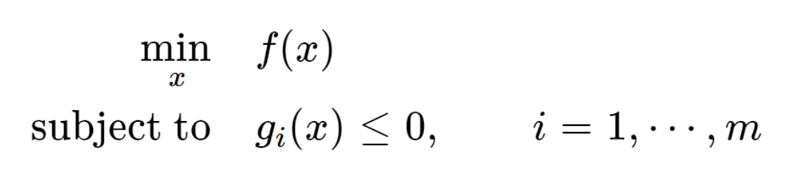
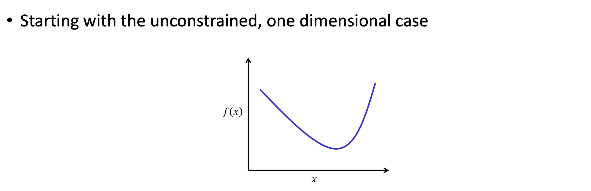
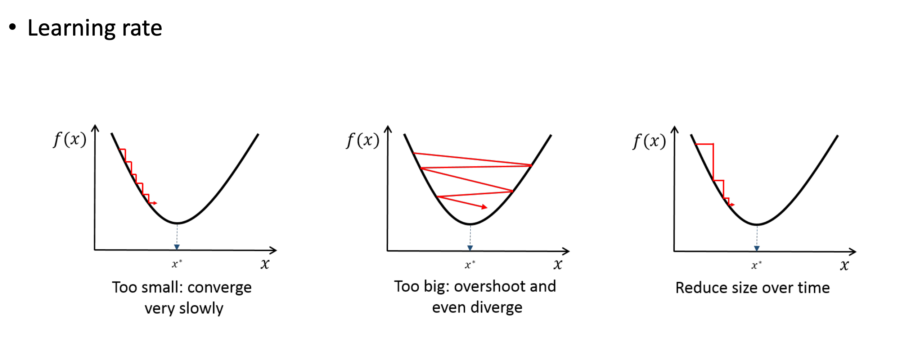

Ch1. Optimization for Deep Learning
아마 거의 모든
엔지니어링 뿐만아니라,
다양한 문제들 모두 최적화
Optimization
문제이다.
예를들어,
내가 아침 몇시에 운동을 해야 가장 기분이 좋고, 에너제틱한
하루가 될 수 있을까?
라는 질문도, 최적화 문제인데
해결하는 방법은
y = f(x)
x:input, y:output
에서 함수 f 를 정의하는 것이다.
예를들어, 나만의 작년
365일의 데이터를 토대로,
겨울이 될 수록 해가 늦게 뜨니까, 더 늦게 운동을 해야 된다면,
y = x/12 + 6
x: (단위: 월)
y: (단위: 시)
이런식으로, 식을 세울 수 있을 것이다.
그런데, 전날 잔 시간, 전날 마신 술의 양, 전날 받은 스트레스양
등등 다양한 요인들이
종합적으로 고려되어야 할 것이다.
이럴 경우, f(x)를 정의하면 좋지만,
정확히 define 하기 어려운 경우가 많다.
이때, 강력한 해결책이 바로,
Deep Learning
정확히 말하면, 딥러닝은

이렇게, 최소의 해(min)을
찾는 것을
가장 잘한다.
위의 예시를 보면,
기분이 최고의 시간 = output으로
우리가 도출 하고 싶었었다.
그렇다면,
(기분의 정도) * (-1) = y
로 재 정의하면,
최저의 y를 구하는 문제로
변하게 된다.
결국, 우리는 y = f(x) - min 일때의 x (아침 시간)
을 찾는 것이다.
이렇게, 일부러 Min을 구하는 문제로 변형시켜 주면,
딥러닝을 사용하기 좋은 것이다.
이제, y=f(x) -> min 값일때의 x을 찾아내는 방법을 알아보자.
Gradient Decent Method

아주 간단하다,
x백터의, 그레이디언트 백터를 정의하고,

연속, 미분가능한 f에서
최적의 point는
기울기 = 0 인 지점일 것이다.
(unconstrained op 는 x에 제약 조건이 없는 것이다)
(e.g) x>=0 조건이 있으면, constrained Op

그렇다면, x0에서 시작하고,
기울기에 alpha(step size)를 곱한 값만큼
x를 움직이는 것이다.
이 과정을 f'(x) = 0인 순간까지 진행하여
최적의 x를 찾아내는 것이다


보통 이렇게, x가 다차원인 경우가 많다.
x=(x1,x2,x3,...xn)
실제 x,y - input, z - output
인경우, z최소가 되는 최적의 x,y,를
Gradient Decent방법을 사용하면
밑의 그림의 과정을 거친다.

여기서, 아까 Step size를 alpha를 살펴보면
alpha가 클수록, x 값이 급격하게 변화함을 알 수 있다.
따라서, step size 가 너무 작으면, 연산시간이 오래걸리고,
너무 크게 되면 가운데 사진처럼 overshoot 현상이 일어난다.

여기서, 하지만 한가지 짚고 넘어가야할 부분,
Gradient decent방법이
Convex인 경우는
local min = global min이지만,

Non-convex같은 경우는
local min != global min일 수 있다.
즉, 시작지점이 어디냐에 따라서, min값이 달라지게 된다는 것이다.
결국, 다양한 시작점에서 진행해본후,
global min값을 찾아야 한다.